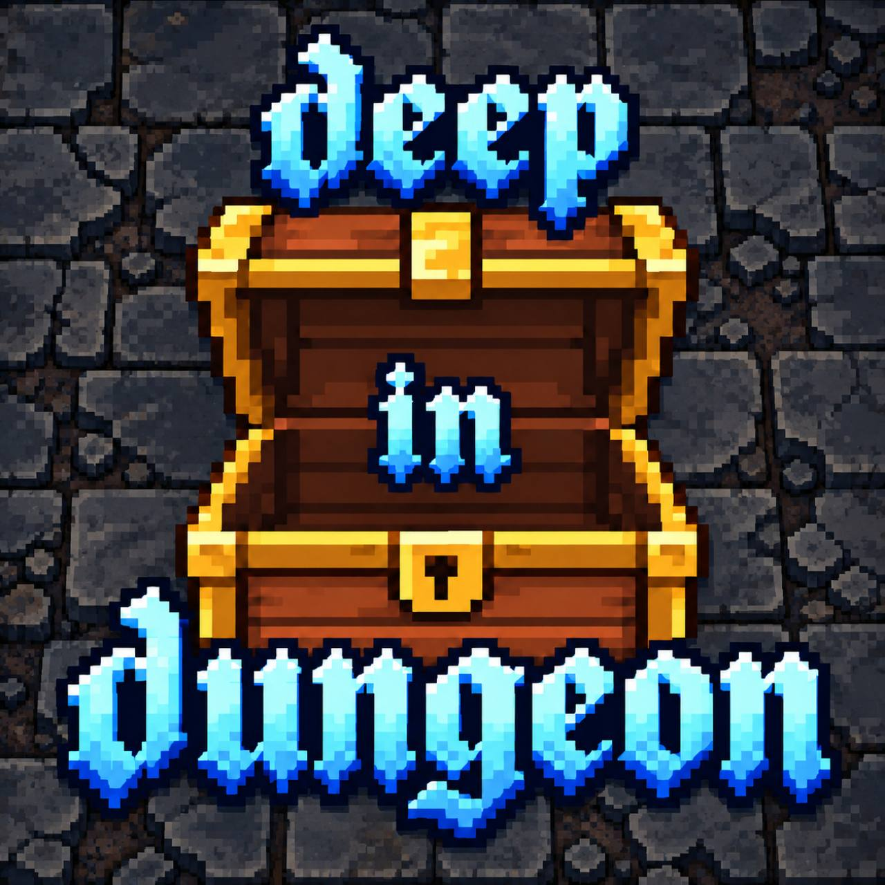

Sprzęt staje się talią
Broń daje ataki, kostur i artefakty — także wsparcie. Różne przedmioty wnoszą różne liczby kart. Na początku własnej tury otrzymujesz do sześciu kart.

DEEP IN DUNGEONPRZEWODNIK WĘDROWCA Prototyp 0.40◇ TUROWA GRA KARCIANA · PRZEGLĄDARKA I ANDROID
Każde piętro to nowa niewiadoma.
Każdy przedmiot — inny sposób na przetrwanie.
Poznaj lochy Deep in Dungeon: wyposażenie, które buduje twoją talię, przeciwników na drodze i historię powstawania gry.
Bez pośpiechu. We własnym tempie.
ZAGRAJ / WYBIERZ WERSJĘ
Rozpocznij wyprawę w przeglądarce albo pobierz aplikację na Androida. Obie wersje korzystają z tych samych zasad gry.
PRZEGLĄDARKA · PROTOTYP 0.40
Graj w przeglądarceKliknij i wejdź do lochu. Pierwsze uruchomienie wymaga pobrania plików gry. Najlepiej zacząć od aktualnego Chrome, Edge lub Firefox na komputerze.
Postęp zapisuje się w tej przeglądarce i jest niezależny od APK. Wyczyszczenie danych witryny usuwa zapis. Do powrotu na stronę użyj „Zapisz i wróć”. Wersja Web jest prototypem; test na fizycznym telefonie nie został wykonany.
AKTUALNE WYDANIE ·
Pobierz APK na AndroidaAplikacja Android działa offline. Aktualizuj grę bez odinstalowania poprzedniej wersji, aby zachować zapis.
01 / O GRZE
Wyruszasz z drewnianym nożem. Przemierzasz losowane piętra, zbierasz sprzęt i szukasz drogi w dół. To, co założysz, określa karty, którymi walczysz.
Broń daje ataki, kostur i artefakty — także wsparcie. Różne przedmioty wnoszą różne liczby kart. Na początku własnej tury otrzymujesz do sześciu kart.
Walka jest turowa. Wybierasz kartę i cel, pilnujesz energii. Klasa pancerza utrudnia trafienie, a bariera pochłania obrażenia. Każda z tych ochron działa inaczej.
Zacznij z jednym wybranym towarzyszem: Wojownikiem, Łucznikiem, Magiem, Łotrzykiem albo Klerykiem. Rekrutuj kolejnych, rozmawiaj i wymieniaj sprzęt. Kierujesz swoim bohaterem; sojusznicy podejmują własne decyzje.
Mniejsze pokoje łączą cienkie korytarze. Wrogowie mogą rozpocząć walkę przez aggro zależne od siły całych drużyn; ściany blokują wykrycie przez aggro. Podczas marszu mogą pojawić się posiłki poza kadrem.
Gdy nie masz jeszcze zapisanego imienia, gra pyta: „Podaj imię swojego nieszczęśnika”. Wybierz od 1 do 24 znaków, z polskimi literami i spacjami. Imię pozostaje po zamknięciu gry; zmienisz je przez Opcje → Zmień nazwę postaci. Zmiana obejmuje bieżącą i kolejne próby, bez resetowania postępu i historii.
Od 0.33 w centrum walki widać obie drużyny, do ośmiu postaci po każdej stronie, w dwóch rzędach po cztery. Nad postaciami są nazwy i paski zdrowia. Przycisk Dziennik otwiera pięć ostatnich zdarzeń od najnowszego, a stałe tempo NPC wynosi 0,4 s na zdarzenie. KP bohatera znajduje się w górnym pasku informacji; plecak otwiera przycisk z ikoną. Wskazywanie celu, informacje, rozmowy i dymki zachowują dotychczasowe działanie.
Od 0.34 dotknięcie postaci w bitwie otwiera od razu jej szczegóły, bez pośredniej listy drużyn. Zamknij lub Wstecz wraca do walki. Zachowano ograniczenia informacji o wrogach, wybór celu i rozmowy.
Od 0.35 rozwinięta ręka kart jest przed postaciami i przechwytuje dotknięcia kart. Plecak nad talią znajduje się nieco wyżej. Przycisk Auto obok plecaka oraz w nagłówku ręki pozwala powierzyć grze kolejne tury bohatera: co 0,4 sekundy wybiera kartę według tych samych zasad decyzji co towarzysze, bez używania mikstur. Gdy nie ma dostępnego zagrania, kończy turę i odtwarza zwykłe działania NPC, po czym kontynuuje następną turę bohatera. Auto jest domyślnie przygaszone i wyłączone; po włączeniu staje się kolorowe. Możesz je wyłączyć ponownym dotknięciem, także podczas działań NPC. Wyłącza się również po wyniku lub opuszczeniu walki, przejściu do menu lub w tło oraz błędzie zapisu. Kontynuuj wraca do ręcznego sterowania. Auto nie jest zapisywane jako stałe ustawienie i nie wymaga resetowania rozpoczętej próby.
Od 0.36 informacje o bohaterze — imię, zdrowie z paskiem, bariera, siła, energia i KP — znajdują się w zwartym panelu na prawo od talii. Komunikat walki i podpis pomieszczenia przesunięto, dzięki czemu postacie mają więcej miejsca u góry. Każda drużyna od trzech osób tworzy zygzak: kolejne postacie od lewej do prawej są naprzemiennie niżej i wyżej; jedna lub dwie pozostają w poziomej linii. Imiona, paski zdrowia i obszary dotyku są rozdzielone, a figury dopasowują rozmiar także do krótkiego ekranu. Zmienia się układ ekranu, bez nowych zasad walki. Auto, ręka kart przed figurami i dotychczasowe zapisy pozostają.
Od 0.37 lochy nie mają mgły, zaciemnienia terenu ani stopniowego odkrywania mapy. Cały teren piętra jest dostępny od początku, również w podglądzie mapy. W menu nie ma przełącznika mgły. Podczas marszu nadal oglądasz kadr 11 × 11 pól wokół bohatera; ściany, ruch i aggro działają jak wcześniej. Rozpoczęte próby wczytują się z pełną widocznością terenu i zachowanym postępem, bez resetowania zapisu.
Od 0.38 informacje o dotkniętym sojuszniku lub przeciwniku otwierają się w wyśrodkowanym oknie dopasowanym wysokością do treści, bez przyciemniania pola walki. Długie szczegóły można przewijać, a rozmowa z towarzyszem jest dostępna w nagłówku. Zamknij i Wstecz wracają do bitwy; wybór celu, zasady walki i zapis pozostają bez zmian.
Od 0.39 cała gra dopasowuje się do ekranu w pionie i poziomie: menu, mapa, walka, karty, ekwipunek i okna. Na szerokim ekranie panele układają się obok pola gry, a ilustracje zachowują proporcje. W przeglądarce gra zajmuje dostępne okno i ma przycisk Pełny ekran; Android dopuszcza obrót wraz z urządzeniem. Układ uwzględnia bezpieczny obszar przy krawędziach. Kadr mapy 11 × 11, reguły i zapis pozostają bez zmian. Obrót i wycięcia ekranu wymagają jeszcze odbioru na fizycznym telefonie.
Od 0.40 obie drużyny na polu walki używają skali postaci dobranej do liczniejszej strony. Przy trzech sojusznikach i dwóch przeciwnikach wszystkie figury mają skalę drużyny trzyosobowej. Równoliczne składy zachowują dotychczasowy rozmiar. Formacje, imiona, paski zdrowia, dotyk, reguły walki i zapis pozostają bez zmian.
Od 0.32 okno Nowa próba ma dwa wybory: poziom Normalny lub Trudny oraz jednego wskazanego przez ciebie towarzysza. Domyślnie są to Normalny i Kleryk. Nowe próby mają stałe cztery skrzynie na piętro. Każdy towarzysz zaczyna z istniejącym wyposażeniem odpowiednim do swojej roli i może je później zmieniać. Kontynuuj zachowuje dotychczasową drużynę, sprzęt i ustawienia zapisanej próby.
Od 0.31 ściany mają 36 nowych grafik: sześć kształtów po sześć wariantów, z jasnym, ciepłym kamieniem widzianym prostopadle z góry. Pozostały 24 dotychczasowe warianty podłóg oraz grafiki schodów, skrzyń, łupów i postaci. Wygląd danego rodzaju kafelka pozostaje stały podczas marszu i po wczytaniu; zobaczysz go także w rozpoczętej próbie, bez zmiany układu lochu.
Od 0.29 ściany są dobierane według rzeczywistego brzegu pokoju: proste odcinki nie zamieniają się w serię połączeń T. Poprawka obejmuje również bufor ruchu, bez resetowania wyprawy.
Od 0.30 nowe piętra mają 50 × 50 pól i 14 pokojów, a korytarze poza pokojami najwyżej 4 pola. Zapisane piętro pozostaje nietknięte; mniejszy loch powstaje dopiero przy nowej próbie lub zejściu niżej. Liczba przeciwników nie została zmniejszona.
Przemierzaj → Walcz → Zbieraj → Zmieniaj talię → Schodź głębiej
Pokonaj bossa, odsłoń schody i zdecyduj o zejściu. Śmierć kończy próbę, zwykłe zamknięcie pozwala kontynuować zapis. Zapis następuje po ukończonych akcjach i trasach; nagłe ubicie procesu może cofnąć niedokończony marsz. Nowe zasady eksploracji od 0.26 działają na nowych próbach i kolejnych generowanych piętrach.02 / BIBLIOTEKA PRZEDMIOTÓW
Od pierwszego noża po niezwykłe znaleziska. Zajrzyj do środka, by zobaczyć statystyki, efekty i pełny zestaw kart.
03 / BESTIARIUSZ
Sprawdź, kto stoi na drodze. Obecnych przeciwników i przyszłe koncepcje wyraźnie oznaczono — wygląd nie oznacza wdrożenia.
04 / HISTORIA WERSJI
Od pierwszej wymiany broni do kolejnych pięter i pełnej drużyny. Rozwiń wersję, aby poznać jej zmiany.
Możesz rozwinąć kilka wersji jednocześnie i porównać ich szczegóły.